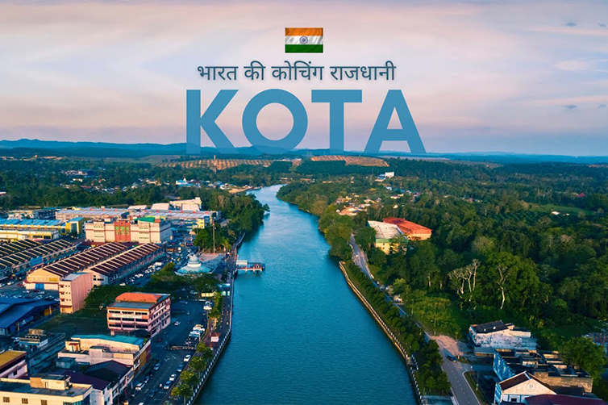

The Dark Reality of Kota: A Pressure Cooker for Aspirants
Kota, Rajasthan, is renowned as a hub for students aspiring to crack competitive exams like the Joint Entrance Examination (JEE). However, beneath its reputation as an educational powerhouse lies a darker reality. Many students, driven by the pressure to succeed, find themselves trapped in a relentless cycle of stress and competition, sometimes with tragic consequences.
The Pressure Cooker Environment:
1. Intense Competition: Kota is often likened to a matrix where everyone is running a marathon. The intense competition among thousands of students can be overwhelming, leading to immense stress and anxiety.
2. Unrealistic Expectations: Many students arrive in Kota with dreams of success, often fueled by parental expectations and societal pressure. The fear of failure and the stigma associated with it can be crushing.
3. Mental Health Struggles: The constant pressure to perform can take a severe toll on students' mental health. Unfortunately, some students find themselves unable to cope, leading to tragic outcomes such as quitting their lives.
Rethinking the Race:
1. Pursuing Passion: Instead of joining the rat race, students should be encouraged to pursue careers aligned with their interests and passions. Choosing a path with less competition can lead to a more fulfilling and balanced life.
2. Diverse Career Options: There are numerous career paths beyond engineering and medicine. Exploring fields like arts, humanities, and vocational courses can open up new opportunities and reduce the pressure to conform.
3. Support Systems: It's crucial to build strong support systems for students, including counseling services and mental health resources, to help them navigate the challenges of competitive exams.
Conclusion:
The story of Kota serves as a cautionary tale about the dangers of excessive pressure and competition. It's time to shift the focus from merely chasing prestigious careers to nurturing individual talents and interests. By doing so, we can create a healthier, more supportive environment for students, allowing them to thrive in their chosen fields without sacrificing their well-being.